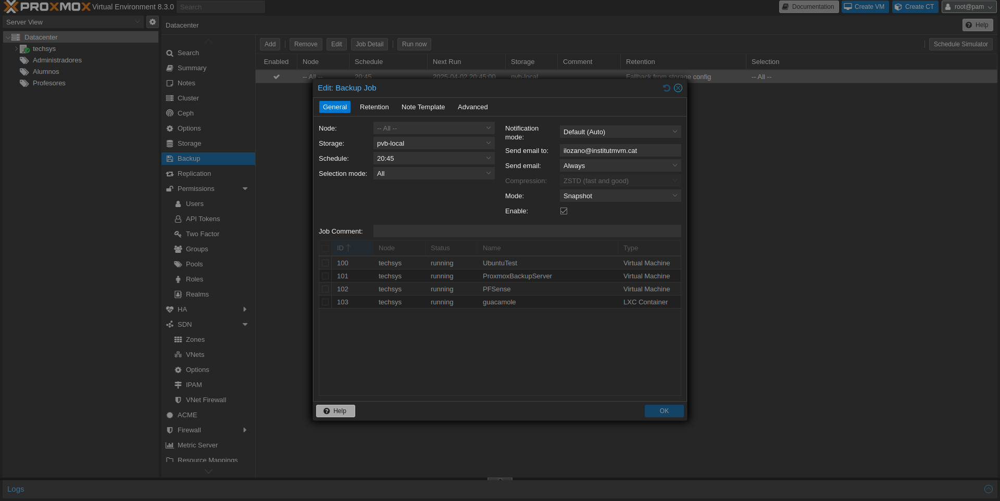

1. Introducción
En esta sección, se abordará el funcionamiento de herramientas como PFSense, así como el
hardware necesario para implementar Proxmox VE. También se incluirán ilustraciones
detalladas sobre el proceso de instalación, sus características más relevantes y referencias de sitios
web consultados.
2. Ventajas y Desventajas
| Ventajas |
Desventajas |
| Aumenta la productividad, eficacia, agilidad y capacidad de respuesta del departamento de
TI.
|
Para empresas pequeñas, puede ser difícil pensar en una sala de equipos o servidores. No
obstante, existen soluciones adecuadas para iniciarse en este ámbito. |
| Facilita y simplifica el despliegue de recursos y aplicaciones. Reduce o elimina los tiempos
de
inactividad. |
Dentro de las máquinas virtuales, es crucial no sobrecargar un servidor con demasiadas
instancias. Es importante considerar las características del hardware físico para obtener un
rendimiento óptimo. |
| Proxmox reduce los costes fijos y los gastos operativos. |
Aunque cuenta con una interfaz web intuitiva, requiere conocimientos avanzados de
Linux y virtualización para configuraciones complejas.
|
3. Funcionamiento
PFSense
PFSense es un firewall y router de código abierto basado en FreeBSD,
ampliamente utilizado para la gestión de redes en entornos virtualizados. Su integración con Proxmox
permite:
- Implementación de firewalls avanzados dentro de máquinas virtuales.
- Gestión del tráfico de red en entornos corporativos.
- Creación de VPNs seguras para accesos remotos.
- Control de ancho de banda y filtrado de contenido.
Instalación de PFSense
- Descargar pfSense: Ve a la página oficial de pfSense y descarga el archivo ISO para tu
arquitectura (usualmente
amd64).
- Crear medio de instalación: Usa herramientas como Rufus para grabar la
ISO en un USB o CD/DVD.
- Arrancar desde el medio de instalación: Conecta el USB o CD al equipo, arranca desde él
y sigue las instrucciones de instalación.
- Instalar pfSense: Selecciona el disco donde deseas instalar pfSense y confirma la
instalación. Reinicia cuando termine.
- Configurar pfSense: Conecta una computadora a la interfaz LAN, ingresa a
192.168.1.1 desde un navegador y usa el usuario admin y la contraseña
pfsense.
- Configuración inicial: Sigue el asistente para configurar las interfaces de red y
ajustes básicos como IP, DNS y zona horaria.
Configuración
Configurar WAN
- Accede a Interfaces > WAN.
- Si tu ISP da IP dinámica, selecciona DHCP. Si es
estática, selecciona Static IP y configura la IP proporcionada.
- Guarda los cambios.


Configurar LAN
- Accede a Interfaces > LAN.
- Asigna una IP estática para la LAN (ej.
192.168.1.1).
- Habilita la interfaz LAN y guarda los cambios.

Configurar el Servidor DHCP
- Ve a Services > DHCP Server.
- Habilita el servidor DHCP para la interfaz LAN.
- Define un rango de IPs (ej.
192.168.1.100 a 192.168.1.200).
- Guarda los cambios.


Configurar el Firewall
- Ve a Firewall > Rules.
- En la interfaz LAN, agrega una regla para permitir tráfico de LAN a WAN (acción:
Pass).
- En la interfaz WAN, generalmente no se necesitan reglas adicionales.
- Aplica los cambios.


Verificar
- Conecta un dispositivo a la LAN y verifica que obtenga una IP del rango DHCP y pueda acceder a Internet.
Proxmox VE
Proxmox VE es una plataforma de virtualización de código abierto, que combina
KVM y LXC para ofrecer una solución integral de administración
de máquinas virtuales y contenedores. Entre sus funcionalidades destacan:
- Gestión centralizada mediante clústeres de Proxmox.
- Snapshots y backups eficientes.
- Alta disponibilidad (HA) para entornos críticos.
- Ceph y ZFS como opciones avanzadas de almacenamiento distribuido.
La instalación de Proxmox VE es un proceso relativamente sencillo. Se deben seguir los siguientes
pasos:
- Descargar la ISO de Proxmox VE desde el sitio oficial.
- Crear un medio de instalación (USB o DVD) y configurar el BIOS para arrancar desde él.
- Seguir las instrucciones del asistente de instalación.
- Configurar la red y la interfaz web de administración.
- Realizar actualizaciones y ajustes según las necesidades del sistema.
Proxmox BS
Proxmox BS es una solución de respaldo empresarial diseñada, para máquinas virtuales,
contenedores y hosts físicos. Ofrece
copias de seguridad incrementales y deduplicadas, lo que reduce la carga de red y el espacio de
almacenamiento. Gracias a sus potentes
métodos de cifrado e integridad, garantiza la seguriada de los datos incluso en
destinos no confiables. Entre sus funcionalidades destacan:
Debido al presupuesto, nuestro PBS se encuentra dentro de PVE, pero en el futuro tendremos un
servidor
dedicado para PBS.
Ventajas
- Backups incrementales, que solo guardan los cambios desde la última copia.
- Deduplicación de datos, que evita almacenar información duplciada.
- Compresión, que reduce el espacio encesario para los backups.
Instalación de Proxmox BS
- Descargar la ISO: Obtenga la iamgen ISO de Proxmox Backup Server y cópiela
en una
unidad USB o CD/DVD. Descargar
aquí.
- Arrancar desde USB: Inicie el sistema desde la unidad USB y pulse
"Intro"
para comenzar la instalación.
- Configuración via web: Administre todo desde su navegador sin necesidad de
herramientas
adicionales.
Configuración de Backup Encriptado



4. Documentación del Bot de Telegram con
Google Apps Script
Descripción General
Este bot de Telegram, llamado Marcos, está diseñado para asistir a los usuarios con consultas comunes y
para derivar solicitudes de contacto a un equipo humano. Las respuestas se registran automáticamente en
una hoja de cálculo de Google Sheets para su seguimiento. Además, se envía un correo cuando se solicita
asistencia.
Tecnologías Utilizadas
- Telegram Bot API (creado con BotFather)
- Google Apps Script
- Google Sheets
- MailApp (Gmail)
URL del Script (Webhook)
plaintext
CopiarEditar
https://script.google.com/macros/s/AKfycbyFBJYvbOJlyX4cIKRT6GTibbACInMn99PhaD4qItVrEoQncXVRZKCIAFOQJeA19_N3/exec
Comandos Disponibles
| Comando |
Descripción |
| /start |
Muestra el mensaje de bienvenida y el menú de opciones |
| /contacto |
Solicita ayuda de un asistente y genera un correo automático |
| /faq |
Muestra preguntas frecuentes y sus respuestas |
| /exit |
Finaliza la conversación |
| Otro |
Devuelve un mensaje de error si el comando no está reconocido |
Lógica del Bot (Apps Script)
1. Inicialización
- Se define el token del bot y la URL del webhook.
- Se establece un diccionario de comandos (command) con las respuestas automáticas.
2. Webhook Setup
js
CopiarEditar
function setWebhook(){
var url = apiUrl + "/setwebhook?url="+appUrl;
UrlFetchApp.fetch(url).getContentText();
}
3. Manejo de Mensajes (POST)
Cuando un usuario escribe en el bot:
- Se extrae el userID, nombre, mensaje y fecha.
- Se registra el mensaje en un Google Sheet.
- Si el usuario escribe /contacto, se dispara una función para enviar un correo.
- Se genera la respuesta automática en función del comando recibido.
js
CopiarEditar
function doPost(e) {
var webhookData = JSON.parse(e.postData.contents);
...
sheet.appendRow([from, username, text, date]);
if (text === "/contacto") {
sendEmail();
}
...
UrlFetchApp.fetch(url, opts).getContentText();
}
4. Guardar en Google Sheets
Los mensajes se guardan en la hoja:
less
CopiarEditar
- ID del Usuario
- Nombre
- Mensaje
- Fecha
5. Correo Automático
Se envía un correo cuando un usuario escribe /contacto:
js
CopiarEditar
function sendEmail() {
var email = "ilozano@institutmvm.cat";
var subject = "Solicitud de contacto desde el bot de Telegram";
var body = "Una persona ha solicitado ayuda a través del bot de Telegram.";
MailApp.sendEmail(email, subject, body);
}
Despliegue y Pruebas
- Ir a Deploy > Manage deployments en el entorno de Google Apps Script.
- Crear un nuevo despliegue tipo Web app.
- Ejecutar como: Yo
- Quién tiene acceso: Cualquiera, incluso anónimo
- Copiar la URL generada y establecerla como webhook con la función setWebhook().
- Probar el bot enviando /start desde Telegram.
Seguridad
- Solo se responde a comandos conocidos.
- Se limita el método GET para evitar accesos no deseados:
js
CopiarEditar
function doGet(e){
return ContentService.createTextOutput("Método GET no permitido");
}
5. Hardware Compatible
Para una implementación óptima de Proxmox VE, se recomienda el siguiente
hardware:
- Procesador: Intel 64 o AMD64 con soporte para virtualización (Intel
VT-x/AMD-V).
- Memoria RAM: Mínimo 2 GB para el sistema y servicios de
Proxmox
VE,
más RAM adicional según las máquinas virtuales. Para Ceph o
ZFS,
se
recomienda 1 GB extra por cada TB de almacenamiento.
- Almacenamiento: Se recomienda SSD para mejor rendimiento y
redundancia.
- Almacenamiento del sistema operativo: RAID por hardware con
BBU
(Battery Backup Unit) o ZFS sin RAID.
- Almacenamiento de máquinas virtuales: RAID por hardware con BBU o sin RAID
con
ZFS. Ni ZFS ni Ceph son compatibles con
controladores
RAID por hardware. También se puede usar almacenamiento compartido o distribuido.
- Red: Interfaces de red Gigabit redundantes, con opción a
10
Gbit o superior según el clúster y la tecnología de almacenamiento.
- Passthrough PCI(e): Se requiere una CPU con soporte para
VT-d o
AMD-d.
6. Webgrafía
- Manual
de Usuario del Servidor Proxmox
- Sitio Oficial de Proxmox
- Documentación de PFSense
- Isnum